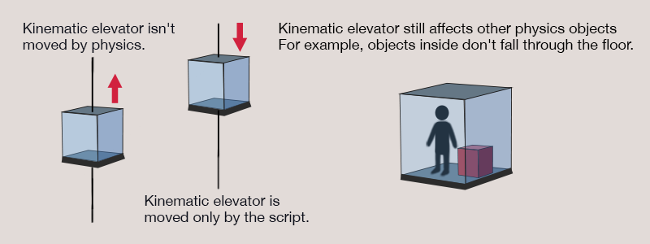
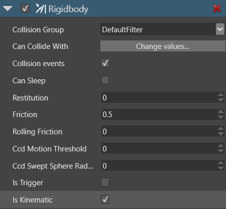

Kinematic rigidbodies
Sometimes you want to move rigidbodies in a specific way rather than have other objects move them. For example, you might control an elevator with a script, via its Transform property, rather than have other objects push and pull it. This is a kinematic rigidbody.
Although kinematic rigidbodies aren't moved by physics, other objects can still collide with them. For example, in the case of the elevator, objects placed inside won't fall through the elevator floor.

Make a kinematic rigidbody
Select the entity you want to be a kinematic rigidbody.
In the Property Grid, under the Rigidbody component properties, select Is kinematic.

Scripting kinematic rigidbodies
You can script the Is kinematic property to turn on and off on certain events. For example, imagine our kinematic elevator's suspension cables are cut. You can script the Is kinematic property to change to false when this happens. The elevator becomes subject to the usual forces of physics, and falls.